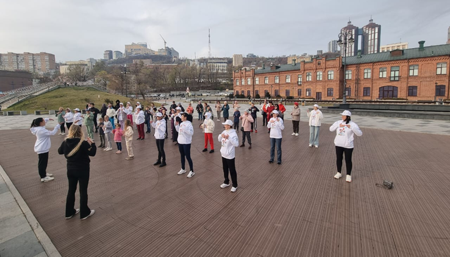
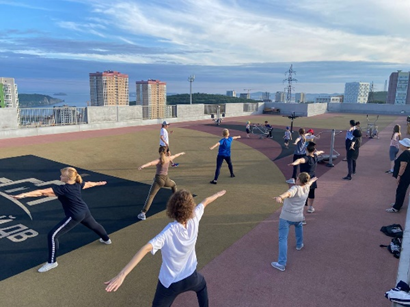
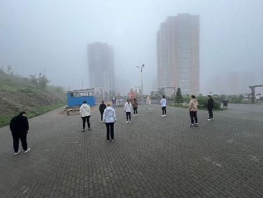
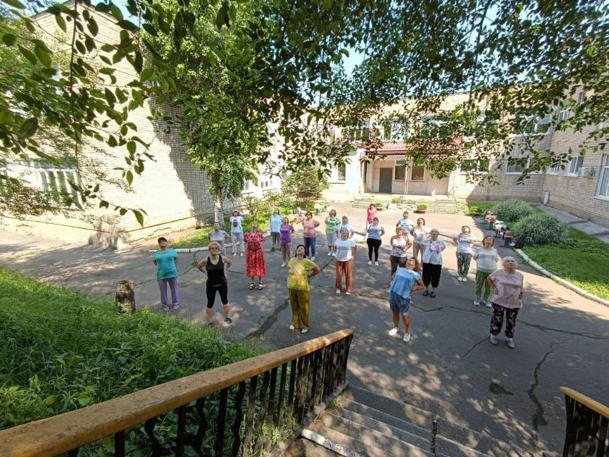
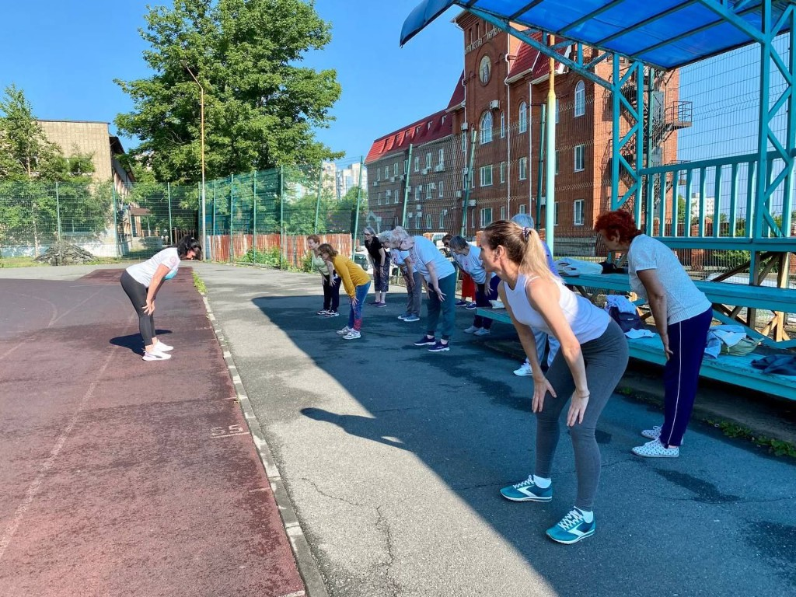
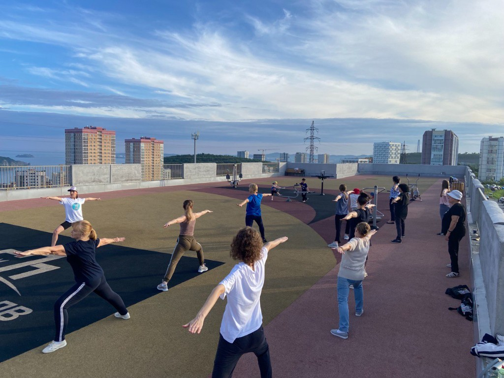
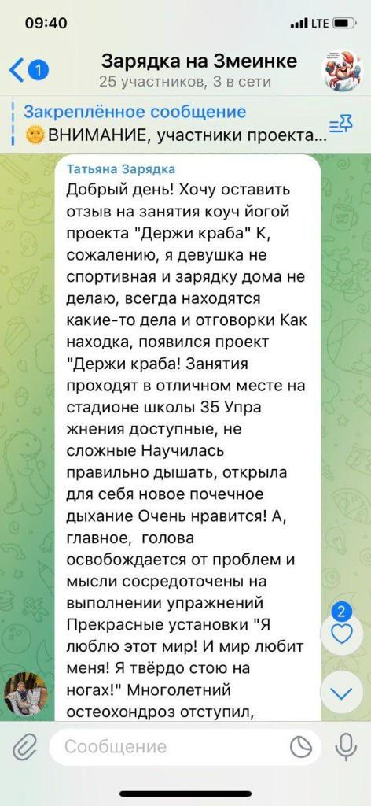
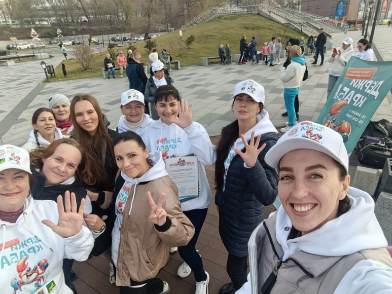

Бесплатно · для всей семьи
Летние зарядки в стиле КОУЧ-йоги
Утро на свежем воздухе, мягкое движение и тёплая компания — без спешки, как вы хотели провести лето
Первый раз? Придите в удобной одежде — покажем и подскажем, подготовка не нужна
Что такое КОУЧ-йога
КОУЧ-йога — это соединение йоги, психологии, коучинга и телесно-ориентированной терапии.
Зарядка в стиле КОУЧ-йоги — это доступная практика для людей разного возраста, пола и с любым уровнем физической подготовки. Зарядка проходит без ковриков. Продолжительность — около 1 часа.
- для любого возраста и пола
- любой уровень подготовки
- без ковриков
- около 1 часа
Для кого подходят занятия
Если вы во Владивостоке и хотите начать день с движением на свежем воздухе — вам сюда
Где проходят занятия
Три площадки во Владивостоке. Расписание обновляется каждую неделю — чтобы не пропустить ближайшую встречу, вступите в чат.
Нагорный парк
Сбор у входа в парк
Минный городок
Открытая площадка на свежем воздухе
Патрокл
Сочинская, 15
Хотите прийти на ближайшую зарядку?
В чате — актуальные даты, время, площадка и напоминания перед занятием
Что взять с собой
- удобную одежду
- воду
- хорошее настроение
Коврики не нужны — пришли и начинай, всё просто
Как это выглядит
Реальные моменты с зарядок — вместе приходят десятки участников разного возраста
Фото сняты в рамках социального проекта «Уличная зарядка в стиле КОУЧ-йоги „Держи КРАБА"» (2024 год), который реализовала АНО «Центр развития КОУЧ-йоги» при поддержке Администрации города Владивостока.







Отзывы участников
Участники отмечают не только телесные ощущения, но и изменения в настроении, лёгкости и уверенности — без имён, только суть
Отзывы оставлены в рамках социального проекта «Уличная зарядка в стиле КОУЧ-йоги „Держи КРАБА"» (2024 год), который реализовала АНО «Центр развития КОУЧ-йоги» при поддержке Администрации города Владивостока.
«Благодарю за прекрасную возможность заниматься йогой на свежем воздухе! Уже вторую субботу заряжаюсь позитивом на целый день. Упражнения подобраны очень грамотно — для любого уровня подготовки».
«Каждую субботу набираюсь энергии и позитива! Спасибо за тёплую атмосферу, аффирмации, настроение и понятную подачу асан. Жду следующего занятия!»
«После вечерней зарядки на свежем воздухе — приятные ощущения. Упражнения КОУЧ-йоги сняли усталость и подняли настроение».
«Это зарядка бодрости и здоровья. Упражнения помогли справиться с защемлением седалищного нерва. Призываю тех, кто ещё не присоединился — выходите к нам!»
«Мне очень нравится формат: упражнения не сложные, сделать может каждый, а тренер смотрит и поправляет технику. После тренировок — отличные ощущения в спине. Всем рекомендую!»
«Никогда раньше не занималась йогой — очень понравилось! Несмотря на простоту позиций, чувствовала хорошую нагрузку. Почечное дыхание — просто находка».
«Занятия доступные и несложные. Научилась правильно дышать. Голова освобождается от проблем, мысли сосредоточены на упражнениях. Замечательные аффирмации помогают стоять уверенно на ногах».
«Здорово в прохладный летний день выйти на зелёную лужайку и сделать полезные дыхательные упражнения в кругу хорошей компании».
Частые вопросы

Присоединяйтесь к нам
Ждём вас на занятиях
Летние утра на природе, хорошее настроение и люди рядом — в чате уже больше 900 участников, будем рады знакомству